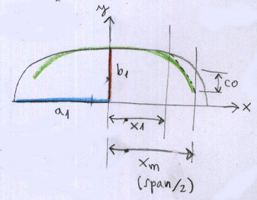
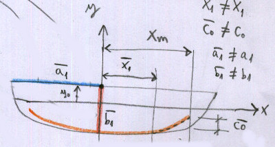
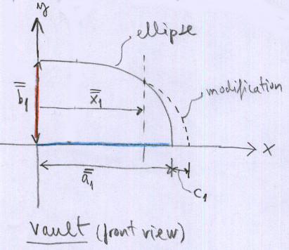
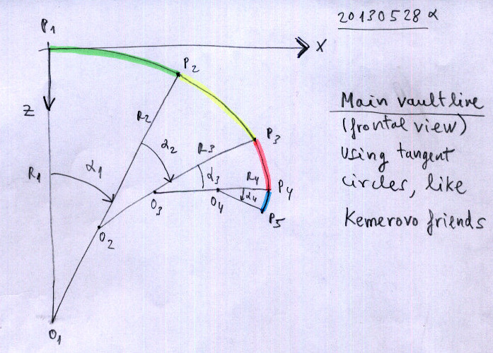

Geometry window
Detailed explanation about how to work with the geometry window.
The Geometry Edit window can be split into 5 sections
- Wing Name
- Leading Edge Section
- Trailing Edge Section
- Vault Section
- Cell distribution section
Leading, Trailing Edge and Vault parameters can be edit on the left side of the individual sections.
Leading Edge parameters
Trailing Edge parameters
Vault parameters
Sin-Cos modif
Radius-Angle modif
Upon pressing [Apply] the individual Graphics on the right will be updated.
PLEASE NOTE: No parameter checks are implemented currently! There's a chance that the geometry will not be valid.
More explanations can be found on the developer website: Laboratory d'envol => Software => pre-processor